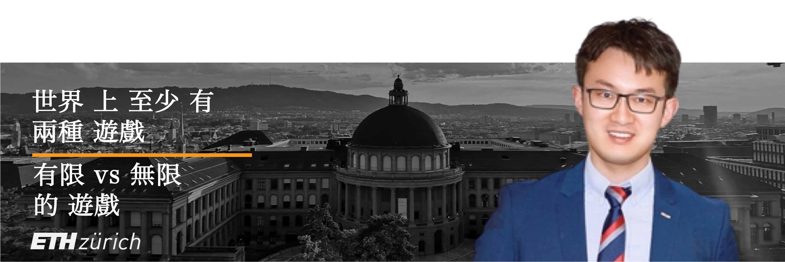
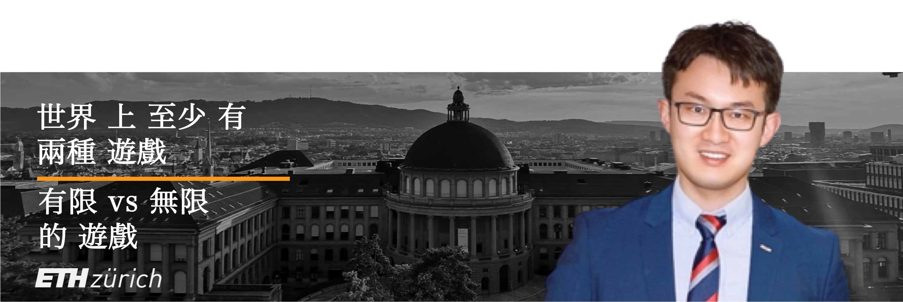

嗨，你好！
 简 /
简 /  繁
繁
目前，徐泓博士在德国慕尼黑汽车行业担任专家组研发工程师一职，致力于实现能源与交通领域碳中和。他的交叉领域研究兴趣集中在新能源技术、低碳智慧交通、能源经济学、ESG & 可持续发展等。攻读学位期间与国内外企业及中欧学术机构合作发表一作和共同作者论文10余篇，担任多项能源领域期刊审稿人，并获得3项专利授权。曾获得美国电化学学会论文邀请及旅行奖、欧盟伊拉斯谟奖学金和本科生创新奖学金。 他于2021年初获得苏黎世联邦理工大学科学博士学位，博士期间供职于瑞士联邦研究院 (PSI) 能源与环境部，研究专注于碳中和/新能源技术，并与业界龙头车企和瑞士同步辐射光源合作进行为期2年的氢能源车辆研发及校企技术转移项目。2016年获得德国慕尼黑工业大学材料学硕士学位，期间在法国雷恩第一大学交换学习获物理学硕士学位，并在德国英飞凌半导体科技总部和欧盟自由电子激光有限公司有业界实习经验积累。硕士期间曾负责中法框架下法国路桥大学与天津海河委员会共同合作的环境技术培训。16岁考入北京交通大学修读材料学，于2013年获得理学学士学位，本科期间带领北京市创新实验项目获邀赴台北参加国际绿能竞赛，并获得“挑战杯”商赛国家级铜奖。此外，学术研究同时，他被美国量化商学院录取远程学习获得工商管理硕士 (MBA) 学位，并曾在头部证券研究所 (A股&美股) 撰写个股深度/行业研究报告以及在双币基金 (种子轮➔A轮) 从事新能源赛道风投实习。
PEK (Nǐ Hǎo) -> CDG (Bonjour) -> HAM (Moin Moin) -> MUC (Servus) -> ZRH (Grüezi) -> ?
教育背景
- 2017-2021 | 博士, 可再生能源 (全奖)
瑞士 · 苏黎世联邦理工大学
- 2014-2016 | 硕士, 材料学 & 物理学 (欧盟双学位)
德国 · 慕尼黑工业大学
法国 · 雷恩第一大学
- 2009-2013 | 本科, 材料化学 (专利发表)
中国 · 北京交通大学
____
- 2020-2021 | MBA, 工商管理 (全奖)
美国 · 量化商学院
研究兴趣
- 新能源技术、碳中和、低碳智慧交通
- 能源经济学、ESG、可持续发展
- 功能材料、材料表征、生命周期评估
- 计算机成像、X射线技术、图像处理
- 股票研究、大数据分析、商业分析
学术职能
- 审稿人:
- 电源杂志 (J. Power Sources, 影响因子: 9.13, 2022)
- 国际氢能杂志 (Int. J. Hydrogen Energy, 影响因子: 7.14, 2021)
- 可持续发展能源杂志 (Energy for Sus. Devel., 影响因子: 5.76, 2021)
- 国际传热传质杂志 (Int. J. Heat & Mass Transfer, 影响因子: 5.58, 2022)
- 绿色科技与可持续发展杂志 (Green Tech. and Sustainability, 新刊, 2022)
- 绿色能源与智慧交通杂志 (Green Energy and Intelligent Transportation, 新刊, 2022)
- 国际组织/智库:
- 瑞士圣加仑国际经济论坛 学术评审团 成员 (St. Gallen Symposium, 2023) - 学术协会:
- 美国电化学学会 文章受邀/会议资助 (ECS, 2019)
- 国际电化学学会 会员 (ISE, 2019)
- 德国物理学学会 会员 (DPG, 2016)
- 研究助理:
- 氢能 & 燃料电池 (能源与环境部, 瑞士联邦研究院, 瑞士, 2016-2021)
- 半导体 & 传感器 (物理系, 慕尼黑工业大学, 德国, 2015-2016)
- 太阳能电池 & 锂电池 (理学院, 北京交通大学, 中国, 2012-2013)
- 课程助教:
- 可再生能源技术II: 能源存储与转化 (苏黎世联邦理工大学, 2017-2019)
工作经历
- 学术界:
- 博士研究员 @ 瑞士联邦研究院, 瑞士 (2016-2021)
- 项目合作 @ 瑞士同步辐射光源, 瑞士 (2017-2020)
- 研究助理 @ 慕尼黑工业大学, 德国 (2015-2016)
- 项目合作 @ 的里雅斯特同步加速器, 意大利 (2016)
- 项目参与 @ 巴黎高科-法国路桥大学, 法国 (2015)
- 项目参与 @ 中国科学院过程研究所, 中国 (2013)
- 工业界:
- 专家组工程师 @ 科德宝(电力)集团, 德国 (2021-目前)
- 项目合作 @ 丰田汽车(欧洲), 比利时 (2017-2019)
- 学期实习 @ 英飞凌半导体, 德国 (2015-2016)
- 暑期实习 @ 欧盟自由电子激光有限公司, 德国 (2015)
- 商业界:
- 风投实习 @ 奇绩创坛投资公司, 中国 (2022)
- 行研实习 @ 中信证券研究部, 中国 (2020-2021)
- 投行实习 @ 泰山资本(美国), 中国 (2013)
学术论文
-
H. Xu* [PSI], M. Bührer, F. Marone, Prof. T. J. Schmidt, F. N. Büchi, J. Eller
Effects of gas diffusion layer substrates on PEFC water management: Part II. In situ liquid water desaturation via evaporation [J]
译文: 气体扩散层基材对质子交换膜燃料电池水管理的影响II: 原位液态水蒸发研究
2022 | J. Electrochem. Soc. [PDF][瑞士光源] [新!] -
S. van Rooij, M. Magnini, A. Mularczyk, H. Xu* [PSI], F. N. Büchi [PSI], Prof. S. Haussener [EPFL]
Conductive heat transfer in partially saturated gas diffusion layers with evaporative cooling [J]
译文: 自蒸发冷却设计的燃料电池部分饱和气体扩散层中的传导传热研究
2022 | J. Electrochem. Soc. [PDF][瑞士光源] [洛桑联邦理工] -
H. Xu* [PSI], S. Nagashima [Toyota], H. Nguyen, K. Kishita, F. Marone, F. N. Büchi, J. Eller [PSI]
Temperature dependent water transport mechanism in PEFC gas diffusion layers revealed by subsecond operando X-ray tomographic microscopy. [J]
译文: 亚秒级原位X射线断层摄影技术揭示质子交换膜燃料电池气体扩散层中的温度依赖性水传输机制研究
2021 | J. Power Sources [PDF][瑞士光源] [丰田汽车] -
M. Bührer, H. Xu* [PSI], A. Hendriksend, F. N. Büchi, J. Eller, Prof. M. Stampanoni [ETH], F. Marone [SLS]
Deep learning based classification of dynamic processes in time-resolved XTM [J]
译文: 基于深度学习的时间分辨X射线断层摄影技术动态过程分类
2021 | Scientific Reports [PDF][瑞士光源] [CWI阿姆斯特丹] -
H. Xu* [PSI], M. Bührer, F. Marone, Prof. T. J. Schmidt [ETH], F. N. Büchi, J. Eller [PSI]
Effects of gas diffusion layer substrates on PEFC water management: Part I. Operando liquid water saturation and gas diffusion properties [J]
译文: 气体扩散层基材对质子交换膜燃料电池水管理的影响I: 原位液态水饱和度和气体扩散特性研究
2021 | J. Electrochem. Soc. [PDF][瑞士光源] -
M. Bührer, H. Xu* [PSI], J. Eller, Prof. J. Sijbers, Prof. M. Stampanoni [ETH], F. Marone [SLS]
Unveiling water dynamics in fuel cells from time-resolved tomographic microscopy data [J]
译文: 使用时间分辨X射线断层摄影数据揭示燃料电池中的水动力学
2021 | Scientific Reports [PDF][瑞士光源] [安特卫普大学] -
C. Csoklich, H. Xu* [PSI], F. Marone, Prof. T. J. Schmidt [ETH], F. N. Büchi [PSI]
Laser Structured Gas Diffusion Layers for Improved Water Transport and Fuel Cell Performance [J]
译文: 用于改善水传输和燃料电池性能的激光结构化气体扩散层
2021 | ACS Appl. Energy Mater. [链接][瑞士光源] -
H. Xu* [PSI], M. Bührer, F. Marone, Prof. T. J. Schmidt [ETH], F. N. Büchi, J. Eller [ETH]
Optimal image denoising for operando XTM of liquid water in PEFC gas diffusion layers. [J]
译文: 燃料电池气体扩散层中液态水原位X射线断层摄影图像的最佳去噪研究
2020 | J. Electrochem. Soc. [PDF][瑞士光源] -
H. Xu* [PSI], F. Marone, S. Nagashima, H. Nguyen, K. Kishita, F. N. Büchi, J. Eller
(Invited) Exploring sub-second and sub-micron XTM imaging of liquid water in PEFC GDLs.[J]
译文: (受邀论文) 探索燃料电池气体扩散层中液态水的亚秒和亚微米级X射线断层摄影成像技术
2019 | ECS Transactions [PDF][瑞士光源] [丰田汽车] [ECS会议旅行奖] -
Y. Nagai [Toyota], J. Eller, T. Hatanaka, S. Yamaguchi, S. Kato, F. Marone, H. Xu* [PSI], F. N. Büchi.
Improving water management in fuel cells through microporous layer modifications: Fast operando tomographic imaging of liquid water. [J]
译文: 通过微孔层改性改善燃料电池中的水管理: 液态水的快速原位X射线断层摄影成像
2019 | J. Power Sources [链接][瑞士光源] [丰田汽车] -
H. Xu* [PSI], M. Bührer, F. Marone, Prof. T. J. Schmidt [ETH], F. N. Büchi, J. Eller [PSI]
Fighting the noise: towards the limits of subsecond X-ray tomographic microscopy of PEFC. [J]
译文: 对抗图像噪点: 迈向燃料电池亚秒级X射线断层摄影技术的极限
2017 | ECS Transactions [链接][瑞士光源] [ModVal最佳展报奖] -
Prof. H. Zhang, R. Wu, H. Xu* [BJTU], F. Li, S. Wang, J. Wang [BJUT], T. Zhang
A simple spray reaction synthesis and characterization of hierarchically porous SnO2 microspheres for an enhanced dye sensitized solar cell. [J]
译文: 用于增强染料敏化太阳能电池的分级多孔二氧化锡微球的简单雾化反应合成和表征
2017 | RSC Advances [链接][BJTU] -
张辉教授 [BJTU], 徐泓* [BJTU], 万金秀, 颜鲁婷教授, 戴春爱
Preparations of new porous oxides spherical powders by spray reaction technique. [J]
新型多孔氧化物球形粉末的雾化反应法制备 [J]
2012 | 《真空与低温》 [链接][BJTU] -
祁晓月, 徐泓* [BJTU], 周兴振
Degradation of highly active cypermethrin via ultrasonic irradiation combined with photocatalysis by TiO2
超声波-二氧化钛光催化耦合法降解高效氯氰菊酯 [J]
2012 | 《化学研究》 [链接][BJTU]
国家专利
-
环形气液界面跳汰磁选装置 [P]
发明人: 富鸣教授, 张辉教授, 徐泓[BJTU], 颜鲁婷教授
中国发明专利号: CN102441489B, 生效日期: Oct 11, 2013. [专利文件] -
可连续运行的气液界面跳汰磁选可控环形装置 [P]
发明人: 张辉教授, 徐泓[BJTU], 富鸣教授, 颜鲁婷教授
中国发明专利号: CN102441490A, 生效日期: Nov 1, 2013. [专利文件] -
超声 - 光催化氧化耦合果蔬清洗装置 [P]
发明人: 周兴振, 徐泓[BJTU], 江红教授, 祁晓月
中国实用新型专利号: CN202311136U, 生效日期: May 9, 2012. [专利文件]
学位论文
-
H. Xu [ETH], Prof. T. J. Schmidt (导师/ETH), Prof. M. Stampanoni (合作导师/ETH), Dr. J. Eller
Subsecond Operando X-ray Tomographic Microscopy of Liquid Water in Polymer Electrolyte Fuel Cells [D]
译文: 氢燃料电池中液态水的亚秒级原位X射线断层显微技术研究 [D]
博士学位论文. 苏黎世联邦理工大学, 苏黎世, 瑞士, 2021. [PDF] -
H. Xu [TUM], Prof. P. Müller-Buschbaum (导师/TUM), Prof. W. Schmahl (合作导师/LMU), Dr. E. Metwalli
Structure & Properties of Thermoresponsive DBC Embedded with Metal Oxide Nanoparticles. [D]
译文: 嵌入金属氧化物纳米颗粒的热膨胀性二元共聚物的结构和性能研究 [D]
硕士学位论文. 慕尼黑大学 & 慕尼黑工业大学. 慕尼黑, 德国, 2016. [PDF] -
徐泓 [BJTU], 张辉教授 (导师/BJTU)
Application of Mesoporous SnO2 Materials in Dye-sensitized Solar Cells and Lithium Batteries. [D]
原文：介孔二氧化锡材料在染料敏化太阳能电池和锂电池中的应用研究 [D]
本科学位论文. 北京交通大学. 北京, 中国, 2013. [PDF]
课程助教
-
《可再生能源技术II - 能量存储和能源转换》
苏黎世联邦理工大学, 硕士课程 (529-0191-01L)
2017-2019 | 春季学期 [课程链接]
学术会议
-
H. Xu [PSI], M. Bührer, F. Marone, T. J. Schmidt, F. N. Büchi, J. Eller
Influence of Pore Size Distribution on Operando GDL Liquid Saturation.
译文：气体扩散层孔径分布对原位水饱和度的影响研究
第236届电化学学会会议 (ECS), 亚特兰大, 美国. 2019. [演讲] [链接] -
H. Xu [PSI], M. Bührer, F. Marone, T. J. Schmidt, F N. Büchi, J. Eller
Advancements in 10Hz operando X-ray Tomographic Imaging of Water in GDLs of PEFC.
译文：聚合物电解质燃料电池气体扩散层中水的10赫兹原位X射线断层成像的进展报告
第8届燃料电池基础研究与前沿发展国际会议 (FDFC), 南特, 法国. 2018. [演讲] [链接] -
H. Xu [PSI], M. Bührer, F. Marone, T. J. Schmidt, F N. Büchi, J. Eller
Studies of Water Distribution in the Gas Diffusion Layer of PEFCs using X-ray Tomographic Microscopy
译文：利用X射线断层显微镜研究聚合物电解质燃料电池气体扩散层中的水分布
第69届国际电化学学会年度会议 (ISE), 博洛尼亚, 意大利. 2018. [展报] [链接] -
H. Xu [PSI], M. Bührer, F. Marone, T. J. Schmidt, F N. Büchi, J. Eller
Water Distribution in the Gas Diffusion Layer of PEFCs: X-ray Tomographic Microscopy Studies
译文：水在聚合物电解质燃料电池的气体扩散层中的分布：X射线断层显微镜研究
第15届燃料电池建模与实验验证研讨会 (ModVal), 阿劳, 瑞士. 2018. [最佳展报奖] [链接] -
H. Xu [PSI], M. Bührer, F. Marone, T. J. Schmidt, F. N. Büchi, J. Eller
Quantification of Feature Detectability for Subsecond X-ray Tomographic Microscopy of PEFC.
译文：亚秒级X射线断层显微镜对聚合物电解质燃料电池的特征检测能力的量化研究
第6届欧洲有机薄膜燃料电池及电解池论坛 (EFCF), Luzern, Switzerland. 2017. [演讲][链接] -
H. Xu [PSI], M. Bührer, F. Marone, T. J. Schmidt, F. N. Büchi, J. Eller
Contrast-to-Noise Ratio Evaluation for X-ray Computed Tomographic Imaging of Water in Polymer Electrolyte Fuel Cells
译文：聚合物电解质燃料电池中水的X射线计算机断层成像的对比度-噪声比评估
第14届燃料电池建模与实验验证研讨会 (ModVal), 卡尔斯鲁厄, 德国. 2017. [展报][链接] -
H. Xu [TUM], E. Metwalli, P. Müller-Buschbaum
Nanoparticles Embeded Thermoresponsive Diblock Copolymers for Magnetic Sensor Application.
译文：嵌入热敏性二嵌段共聚物的纳米颗粒在磁传感器中的应用
2016年欧盟伊拉斯谟MaMaSELF项目年度会议, 瑞吉山, 瑞士. 2016. [演讲] [链接] -
H. Xu [TUM], E. Metwalli, P. Müller-Buschbaum
Magnetic properties and structure of thermoresponsive polystyrene-block-poly(N-isopropylacrylamide)/iron oxide nanocomposite thin films.
译文：热敏性聚苯乙烯块-聚(N-异丙基丙烯酰胺)/氧化铁纳米复合薄膜的磁性能和结构
第80届德国物理学会年会及DPG春季会议 (DPG), 雷根斯堡, 德国. 2016. [展报] [链接] -
H. Xu [BJTU], Prof. H. Zhang, R. Wu
Mesoporous SnO2 Microspheres: Synthesis, Characterization, and Application in Enhanced Dye-sensitized Solar Cells and Lithium Batteries.
译文：介孔二氧化锡微球: 合成、表征和在增强型染料敏化太阳能电池和锂电池中的应用
2013年清华大学能源粒子前沿研讨会, 北京, 中国. 2013. [展报] [链接]
行研报告
- 行业宏观研究 (大中华区):
2022 | 新能源行业: 双碳政策下的中国新能源行业创业驱动力
2020 | 新材料行业: 半导体材料系列之四：5G拉动光通信产业链，磷化铟材料蓄势待发
- 一级市场研究 (A至D轮融资公司):
2021 | 驭势科技: 科技先锋系列报告之驭势科技: 多场景自动驾驶解决方案提供商
2021 | 芯驰科技: 科技先锋系列报告之芯驰科技: 智能汽车自主IP芯片提供商
2021 | 西安奕斯伟: 西安奕斯伟研究分析报告
- 二级市场研究 (A股&美股上市公司):
2021 | 沪硅产业 (688126.SH): 大硅片先锋引领芯片国产替代 (首次覆盖报告)
2021 | CREE (NASDAQ:CREE): 科技先锋系列报告之CREE: 全球功率/射频器件及LED提供商 (美股)
2021 | 经纬恒润 (688326.SH): 科技先锋系列报告之经纬恒润: 汽车电子科技系统服务商
2020 | 天科合达 (870013.OC): 国内领先的SiC晶片生产商
2020 | 立昂微 (605358.SH): 国产替代市场广阔，大硅片产业化在即
2020 | 国瓷材料 (300285.SZ): 义齿用陶瓷材料行业，氧化锆材料势头向好
演讲 & 主持
-
2022 | IN3 资本沙龙 受邀嘉宾: 举足"氢"重, 下重注的“氢能源”到底好在哪里 (第8场, 100+线上参会)
-
2022 | 奇绩创坛 内部分享: 碳中和愿景下的新能源机遇与挑战—科技前沿，政策及投资机会 (50+线上参会)
-
2022 | 博士变形计 栏目主持人: 集成电路/芯片/半导体/前沿—国内外博士生在线圆桌会 (100+线上参会)
-
2021 | Clubhouse 主持人: 能源危机下的博士视野—聚焦各国新能源政策/技术 (光/风/锂/氢/核）(200+成员)
写作
-
2023 | 留欧十年 ⋅ 博士变形计 (回忆录): Once Upon A PhD: Ten Years in Europe (正在写作中)
-
2022 | 汇银资本 (公众号转载): 新能源太极图：锂电vs氢能，谁可摘得碳中和王冠
-
2022 | 知乎圆桌 (世界新能源汽车大会主办): 新能源的三大流派: 换电, 充电, 氢燃料, 到底哪一个会是未来?
-
2022 | 博士变形计 (公众号原创): 俄乌冲突：欧洲能源安全的暗流与危机，及中美影响
荣誉
-
2021 | PSI研究成果高亮展示 [链接]
保罗谢尔研究院 (PSI), 瑞士. -
2019 | JES编辑高亮展示 [Email]
美国电化学学会期刊 (JES), 美国. -
2019 | ECS会议旅行奖 [证明]
美国海军研究办公室资助, 华盛顿特区, 美国. [USD 1'500] -
2018 | 最佳展报奖 [证书]
ModVal会议组委会, 阿劳, 瑞士. [CHF 300] -
2015 | 欧盟伊拉斯谟奖学金
欧盟教育, 视听和文化执行机构颁发, 法国. [2'650 EUR] -
2012 | 东元科技决赛入围奖 [证书]
台北TECO技术基金会颁发, 台北, 中国. [NTD 50'000] -
2012 | 国家级铜奖 [证书]
第八届挑战杯商业计划大赛, 教育部颁发, 北京, 中国. [RMB 5'000] -
2012 | 创新奖学金
北京交通大学颁发, 北京, 中国. [RMB 2'500] -
2010 | 连续三年学习奖学金
北京交通大学颁发, 北京, 中国. [RMB 2'400]
专业培训
-
2020 | 机器学习应用Program
洛桑联邦理工学院, 洛桑, 瑞士. -
2020 | 工业CT应用
奥地利应用技术大学, 威尔士, 奥地利. -
2019 | IBM数据科学专业证书
IBM Inc. & Coursera, 美国. [证书] -
2019 | 机器学习与成像
伯尔尼大学, 伯尔尼, 瑞士. -
2019 | 诺华医药数据科学黑客松
诺华领导力论坛, 卢塞恩, 瑞士. -
2019 | 神经网络与深度学习
deeplearning.ai & Coursera, 美国. [证书] -
2019 | 瑞士 Mobility Program
苏黎世大学银行金融系, 苏黎世, 瑞士. -
2017 | 生物医学成像暑期学校
苏黎世大学附属医院 (USZ), 苏黎世, 瑞士. -
2016 | 应用物理暑期学校
慕尼黑工业大学, 慕尼黑, 德国. -
2015 | X光与中子散射暑期学校
蒙彼利埃大学, 蒙彼利埃, 法国.
参访
- 同步辐射加速器：法国SOLEIL同步辐射加速器 (巴黎, 2015)、德国电子加速器 (汉堡, 2016)、欧盟自由电子激光器 (汉堡, 2016)、意大利Elettra同步加速器 (的里雅斯特, 2016)、瑞士光源 (菲利根, 2017)
- 核能反应堆：法国萨克雷核研究中心 (巴黎, 2015)、海因茨·莱布尼茨中子源研究院 (慕尼黑, 2016)、瑞士贝茨瑙核电站 (阿尔高州, 2018)
- 政府/国际机构：联合国总部 (纽约, 2019)、法国塞纳河-诺曼底水务局 (巴黎, 2016)、苏州市城市规划局 (江苏, 2016)、郑州市生态环境局 (河南, 2014)、开封市环境保护局 (河南, 2014)
技能
-
英语 (流利, C1), 中文 (母语, C2), 德语 (中阶, B1), 法语 (基础, A2)
-
摄影网站, 写作, 视频剪辑, 徒步, 骑行 (环苏黎世湖), 旅行 (30+国家), 乒乓球, 中西餐料理
旅行
- 亚洲：中国大陆 (13+ 省/市)、台湾、俄罗斯、土耳其、泰国
- 欧洲：奥地利、比利时、波斯尼亚和黑塞哥维那、克罗地亚、 捷克、丹麦、爱沙尼亚、法国 (5+ 城市)、芬兰、德国 (25+ 城市)、匈牙利、冰岛、爱尔兰、意大利、列支敦士登、卢森堡、马耳他、荷兰、挪威、葡萄牙、波兰、塞尔维亚、斯洛文尼亚、西班牙、瑞典、瑞士 (30+ 城市)、英国
- 北美：加拿大、美国
- 非洲：大加那利群岛 (西属)
- 合计：到访35个国家/地区 (全球共197个)